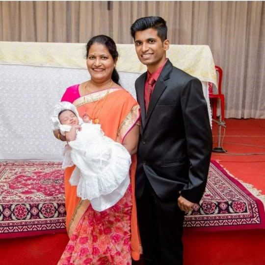

This has been an incredible year. It started with a shock but ends with happiness and pure joy. Honestly, I didn't think this day was possible when you were diagnosed with a giant sized 26cm tumor in your chest. But you are a real fighter and you fought all odds to stay here with us. When you were in surgery, my only prayer was for you to be okay again and you are now @ A big shout out to the brilliant surgeons Dr. Aditya Manke Or. Shardul Malkani and Dr. Mohd Zaki for today would not be possible without their best efforts.

My mother was diagnosed as Ca ovary and referred to Dr. Aditya Manke, by my family doctor, Dr.Vishal Choudhury, got operated in April 1st week 2021 for utrus removal surgery. It was a very safe and skillful surgery post op was smooth. Sir has been very kind and spoke well and encouraged me and my mother. Sir cleared all our doubts over phone. Lockdown restricted our physical follow ups. All reports have been sent on phone and consultation have been through phone.He has always responded in time. Dr. Aditya Manke is very much respected for his robotic surgery skills and a renowned onco surgeon. I thank him with my heart on behalf of my mother, she is doing fine. I really recommend sir and Sanjivani Cancer Centre clinic for their wonderful care treatment and good quality nursing and overall care.
Dear Mr. Anurag Supramanyu,
Hi Sir, this is Danish Raza, Sanwaddata, Hindustan Peper, from Jaunpur U.P. I want to say specialy a very very thanks to you and your staff, that you save my cousin sister Ruhi Khan. Ruhi khan mother's tell me about your greatness. That your relations with pecent. Really sir you are so great. Danish Raza Sanwaddata Hindustan Machhalishahar, Jaunpur U.P.
He is a very well experienced doctor in cancer surgery. Last year He operated on my Father-In-Law (age 72) for oesophagus cancer surgery. I remembered the operation took more than 14 Hrs, it was a very critical situation, and We all were in tension but with his skill and experience He saved my Father-In-Law life. Post operation also We get good treatment, also He is always available on phone if any emergency. Now my Father-In-Law is well. Thank You Sir for your all treatment and support. You have the kindest soul, with a deeply ingrained desire to help make humanity better.
Dr. Manke is an excellent Surgeon. He operated on my 80 years old aunty who had Ovarian Cancer in its fourth stage. Post operative care was also good, he was always attentive and I sincerely appreciate his polite nature. Great experience! I wish all doctors work the same way. Always responsive and willing to help. I wish him success in his future endeavours.
My Mother's CA Carvix(Stage 1B)- Robotic hysterectomies operation was done by Dr.Aditya Manke sir in April 2020. He provided detailed guidance and counselling during the treatment. Because of sir's expert treatment and personal care given to her, my mother has fully recovered and she is fit and healthy now. Thank you very much Manke sir.
Dr.Aditya Manke is such a kind and gentle person. We felt very confident and secure in his care. I appreciate how well you took care of our mom. I appreciate your kind and confident nature in all manner, you always give strength to the patient for fighting in their difficult times.
This is to share my overwhelming thanks and appreciation to Dr Aditya Manke and his team. From the detection of a large tumour, consultation, and assurance, to take up a major surgery being done and post-surgery treatment for my mother - Dr Manke has been extremely supportive and accommodative. He has ensured that the needs, comfort and convenience of the patient i.e. my mother and us are kept as priority throughout the treatment. Thanks to Dr Aditya Manke and his team and Apex Super speciality Hospitals where the admission and surgery happened my mother is back home hale and hearty. A little post-surgery discomfort is there which will gradually fade away.
Need more doctor's like you who care more for their patients!!!!
My Mom had a very large tumour in her thoracic cavity (Chest region). Dr. Aditya Manke and his excellent team consisting of Dr Mohammad Zaki, Dr Shardul Malkani and Dr Sagar Gaikwad (Aesthetic) operated on my mom and successfully removed the tumour. Dr Aditya is extremely supportive, understanding and caring. When he interacts with you, it just gives you so much confidence that you are not afraid to undergo such a major procedure. Furthermore, He is always available to help you understand and guide you through the process so that the patient receives the best possible care. For me personally, Dr Aditya is an angel sent by God who was there for my Mom and gave her the best possible treatment and care. If you are looking for an Oncologist, then look no further because in my experience you will not find anyone better than Dr Aditya Manke. He is an absolute Superstar and the Best Oncologist you can find. No amount of words can describe my heartfelt gratitude and appreciation for what he has done. I am eternally grateful to Dr Aditya Manke.
My father had undergone treatment n surgery for oral cancer. Dr. Aditya was a god sent guardian who convinced my dad for surgery assuring minimum troubles. He kept his words n truly helped my dad n supported n guided us in all steps of treatment. He is very co-operative in nature n well informed in his field. I am highly grateful to him for his support n guidance.
Dr. Manke and Dr.Zaki are the Best Surgeons in Thane. They operated on my 50 years old Father who had Lungs Cancer in its fourth stage. The Post Operative Care Given by them was Excellent.
My father has been detected with Lung tumour and Lymphoma Type B -Non-Hodgkin cancer in October'20.
We approached Oncologist Dr. Aditya Manke (Sanjivani Cancer Centre Thane). My father is taking treatment (Chemotherapy) under Dr. Aditya Manke and Dr. Rajesh Patil (Haematologist). My father has started showing much improvement after start 1st chemo treatment only.
I must say that both the doctors are one of the best in their field, humble, provided proper guidance/ information and most important they are easily available and answer to the concern promptly through WhatsApp or phone call. Which saved our lots of efforts of traveling specially in Pandemic time.
I would also like to mention that where ever it is possible, Dr. Manke gave economical option/ guidance for various tests, CT scan-Biopsy etc, to resources limited family like us. He also has good circle of medical experts as per the requirement.
We would recommend Dr. Aditya Manke (Sanjivani Cancer Centre centre) and his team.
My mother is 78 years old, was having multiple complications like HARNIA, GALLBLADDER associated with Cancer related symptoms, and because of that we were told to go for an expert opinion and treatment, we travelled from Ratnagiri.
If I could give 100 stars, I could, As Dr. Aditya Manke and Dr. Mohammad Zaki both are the excellent surgeons we found. Their engagement with patient and care was excellent, attentive, and easily available for communication making sure all your questions are answered.
Post operation care and follow up experience was excellent. I would strongly recommend Dr. Aditya Manke and Dr. Mohammad Zaki.
"A truly amazing doctor is impossible to forget" Thank you so much for taking care of my mother, it was a very good experience Sirs.
First, I would like to thank the esteemed standard sir. I had tectum cancer. Dr. Manke sir operated on me in December 2019in just two to three months completely cured me of this Major ailment. I was completely terrified. But sir explained it to me properly and gave me a chance to live again by making an accurate diagnosis. This is exactly what happened to me doctor is a God. Sir I am thankful to him for running after me like a God and for healing me completely by performing surgery on me and giving me proper medicine.
Dr. Manke is an excellent Surgeon. He operated on my 80 years old aunty who had Ovarian Cancer in its fourth stage. Post-operative care was also good, he was always attentive, and I sincerely appreciate his polite nature.
Great experience! I wish all doctors work the same way. Always responsive and willing to help.
I wish him success in his future endeavours.
My father had undergone right hemicolectomy plus HiPack surgery. Now he is fine and doing well. I extend my gratitude for Dr. Aditya sir for his postoperative support and guidance. He has been very supportive, transparent yet compassionate. His expertise in robotic surgery is unquestionable. I will recommend him as one of the best oncologists in today's time.
One of my relative was treated recently by Dr. Aditya for surgery of tumour at lower lip. He is very friendly and caring. From the day one he guided us properly and make confident us for the procedure. He explains each n every aspect of pre- and post-surgery. He explains you calmly till you get satisfied and he always motivate patient on each visit for fast recovery. He also helps us for getting convenient radiotherapy at nominal charges. I strongly recommend Dr. Aditya for the cancer treatment. Thank you doctor for your kind help.
My Mother's CA Cervix (Stage 1B)- Robotic hysterectomies operation was done by Dr. Aditya Manke sir in April 2020. He provided detailed guidance and counselling during the treatment. Because of sir's expert treatment and personal care given to her, my mother has fully recovered, and she is fit and healthy now. Thank you very much Manke sir.
I interacted with dr Aditya during hepatic surgery in 2018. As per my experience in course of my mother's cancer treatment at TMH and HCG Manavta Nashik, I can say dr Aditya is not only the great professional but is full of generosity and human touch. He always responded me over every communication channel whenever I needed his guidance/help. I wish dr Aditya and his entrepreneurship Sanjivani care , a great and successful future. U r the real angel for humanity.
Laparoscopic radical Hysterectomy and Thoracoscopic Mastectomy was very well precisely operated by Dr Aditya and Team. My mother is obese, and I was worried about conventional surgery. Surgery lasted for eight hours. Patient mobilised on day two, started on soft diet to full diet on day three and discharged on day four. Morbidity and motility are less post MINIMAL INVASIVE SURGERY. Thank you, team, Aditya.